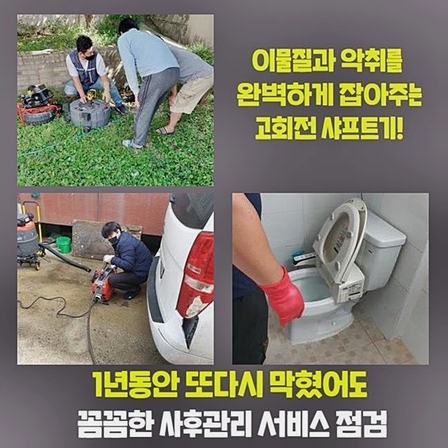
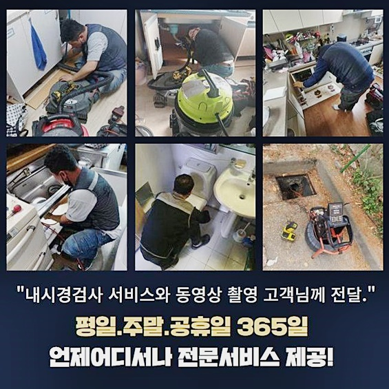
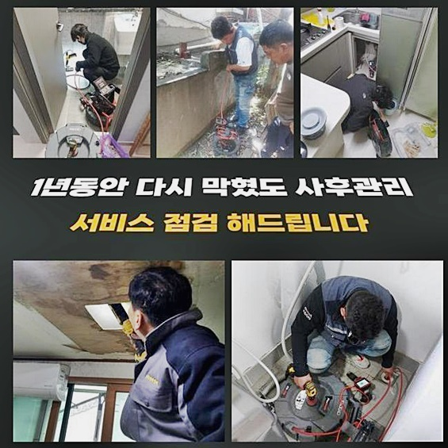
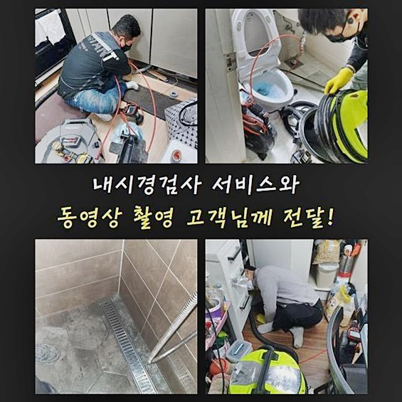
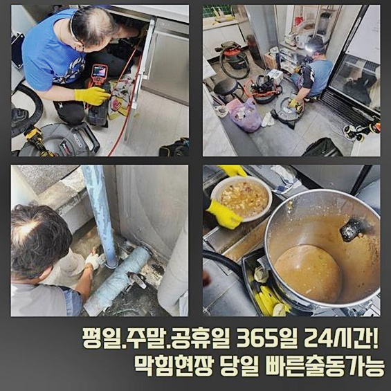
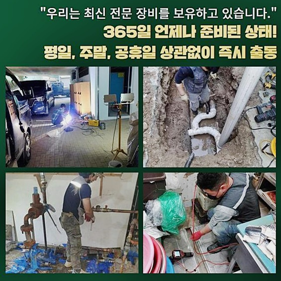

🏠 동대문 용두동하수구막힘 청량리동 하수관고압세척 수리업체
용인시 처인구 배관막힘 전문 시공 후기

📋 작업 개요
- 위치: 용인시 처인구, 수원시 영통구, 화성시 동탄
- 서비스 유형: 배관막힘, 고압세척, 내시경점검
- 작업 일시:
- 업체명: 하수구수사대 (010-5615-2118)
🔍 문제 상황
동대문 용두동하수구막힘 청량리동 하수관고압세척 수리업체
물막힘이 일어나는 증상들과 수준은 건물의 설계나 활용 방식에 따라 달라질 수 있습니다
필연적으로 가정집에 비해서 카페나 레스토랑 등의 상업 시설에서 배수장애가 더 나빠질 수 밖에 없어요
다만 빌딩의 건축 시기나 어떤 방식의 관리를 해온 정도에 따라 상황의 차이가 생기기 때문에 모두 일치한다고 말하기는 곤란합니다
그래서 많은 가구에서 한번에 배수가 안되거나 자주 증상들이 생길 때는 반드시 배관전문업체를 이용해 근원을 찾아내고 문제점을 해결해야 합니다
금일 알려드릴 저희의 베테랑이 방문드린 작업현장도 상업 시설에서 일어난 문제였죠
친구를 통해 우리 수리업체를 추천 받았다고 했는데 툭하면 막힘이슈가 나타나서 전문적인 방법으로 해결할 수 있는 전문기사를 찾고 계셨다고 말씀하셨어요
저희 업체가 도착한 다음 현장의 상황을 확인해보니 빌딩 안에 입주한 많은 가게에서 일제히 물길이 막히고 있는 현상이 일어났어요
상가건물이라서 영업중인 가게에서 배수가 안되거나 흘러 넘치는 역류가 시작된 상태였습니다
하지만 이러한 배수관 막힘은 원인없이 생기는게 아니므로 걱정이 되었습니다

🔎 원인 분석
💡 전문가 진단: 정밀 진단 장비를 사용하여 슬러지의 고착 여부를 판명하고 타격/세척 작업을 실시했습니다.
시작되고 나면 피해도 심하고 화장실 내부의 막힘 역시 심각하기 때문에 뚫어내려면 확실한 해결안을 강구해야하는 상태였죠
의뢰인은 다양한 사례를 사전에 알아보셨는지 배수관막힘을 처리하는 저희전문가에게 배수관 고압세정작업을 실시하고 싶다고 물어보셨어요
고압수 클리닝기기는 일시적으로 강력한 압력을 사용해 충분한 물을 배수파이프로 흘려보내 하수도 내부에 있는 오물덩어리를 빼낼 수 있는 장비입니다
그러므로 필요한 때에 알맞게 사용했을때 빠르게 막힌상태를 처리할 수 있는 것은 사실입니다
그런데 어디에나 고압세척기기를 적용할 수 있는 것은 아니라는 사실들을 명심해 주셔야 합니다
고압수 클리닝기기는 압력을 높일 수 있는 동력엔진과 연결이 필요해서 작업여건이 알맞지 않은 공간에서는 쓰기가 힘들 수 있어요
아울러 연립이나 아파트같은 거주지역에서는 하수관 고압세척 작업보다는 오염물질을 빨아들이는 석션기구 사용이나 플렉스 샤프트장치를 투입한 분해작업과 클리닝 방안들이 효과적일 수 있습니다
하지만 문제의 상가빌딩은 긴 기간동안 막힘현상이 여러차례 생겼났지만 철저한 관리를 하지 않아서 막힘강도가 심각했습니다
배수관 속에 기름덩어리가 계속해서 집적되면 이 부분을 뚫는 과정도 어렵지만 배수관에 직접적인 파손이 나타날 수 있다는 사실이 걱정되는 사안이었습니다
식당 또는 오일을 상당량 활용하는 상가에서 버려지는 슬러지 덩어리와 기름잔여물들은 장기간 배수파이프 안에서 모이면 그 지름이나 하중이 더해지는 경우가 많습니다
그래서 기름뭉치들이 무더기로 누적된다면 배수배관들이 무게가 더해져서 결합된 지점이 약해지거나 가라앉는 증상들이 일어날 수 있어요

🔧 작업 과정
먼저 배수구의 컨디션을 면밀히 확인해서 고압수 세척이 실시될수 있는지 살펴본 후에 하수배관 클리닝을 진행했습니다
결합지점을 꼼꼼하게 점검해보니 배수관이 조금씩 늘어지는 징후를 보였으나 이 상태는 찌꺼기들을 제거하게 되면 원상복귀될 것으로 판단한 바 늘어진 부근만 스틸스트랩으로 고정해주었습니다
이와 같이 사전에 초기 조치를 실시하지 않고 강력한 압력을 적용한다면 배수파이프에 균열이 일어날 수 있어 더 커다란 문제들이 발현될 수 있습니다
고정하는 작업들을 완료하고 이제는 청결한 세척작업을 착수하기 위해 하수배관 내시경기기를 넣기위해 준비했습니다
공동관로가 매우 길게 이어져 있어서 배수관로 내시경기기로 배수관 안쪽을 탐지하는 시간도 길게 소요되었는데요
그럼에도 배수파이프 정비에서 필수적인 과정은 확실한 분석을 통해 문제요인을 파악해 나가는 것이므로 내시경 검사를 게을리해서는 안돼요
고압 물세척을 말끔하게 하기 위해 하수도 내시경카메라를 배관 깊숙한 곳까지 밀어넣어 공용 배수배관을 철저하게 확인했습니다
배수관 속 보수작업이 올바로 되지 않았기 때문에 깊숙한 지점까지 기름찌꺼기가 가득한 상태를 관찰하게 되었습니다
하수배관을 수리하는 저희 팀은 이러한 상태라면 고압수 클리닝기구를 이용해서 수리를 해주는게 적절하다는 결론을 내렸습니다
이런 상업용건물 지하공간에 위치한 공동관로는 긴 길이를 가지고 있는 경우가 많으므로 중간쯤의 위치에서 일단 청소를 해준 후 보강을 하는 것이 효율이 높아요
이와 같이 정밀하게 배수파이프 내의 문제나 연결 체계를 알아낸 후 수리를 진행해야 핵심적인 막힘현상을 수리할 수 있어요
이처럼 꼼꼼한 수리가 아닌 일시적인 수단으로 문제점들을 처리하고 나면 상태는 개선되지 않고 다시금 배관막힘이 발생하는 일이 계속됩니다
이젠 고압세정기를 적용해서 철저하게 하수파이프 세정을 진행해야 하는 시점이예요
막힘의 근원과 문제가 된 영역을 찾아냈기 때문에 고압수 클리닝이 깔끔하게 끝나면 걱정하지 않고 수도물을 활용할 수 있으실 거예요
고압세정 과정은 찰나에 많은 물이 물줄기가 배수파이프 내로 넣기 때문에 전문인력의 실력이 필요한 업무입니다
고압 물세척을 실행하는 동안 내시경기구를 투입해서 완벽하게 오염물질이 청소되고 있는지도 살펴보았습니다
고압 물세척을 마친 후 내시경장비로 배수관 속 상황을 살펴본 뒤 물 흐름 검사까지 몇번이고 수행했는데요 막힘현상 없이 투입한 물이 순조롭게 빠지는 상황을 점검을 하며 파악할 수 있었습니다


✅ 작업 완료
하수배관 막힘을 책임지는 우리업체는 고객님에게 구체적으로 정비과정들을 설명하고 중간쯤 작업을 실시한 위치도 정리한 후 작업들을 마칠 수 있었습니다
이렇게 상가에서 막힘 현상이 발생하면 복잡한 일이 발생되므로 실시간 문제처리가 절실합니다
지금부터는 또 다른 걱정이나 고민을 접어두시고 저희업체에 연락해주세요
미미한 증상들을 방치한다면 더욱 심각한 이슈로 나빠질 수 있으니 발견하는대로 즉각적인 해결하여 드리겠습니다
그 어떤 수리공보다 빠르고 효과적으로 배수 장애를 처리하겠습니다



⚠️ 하수구 배관 막힘 예방 및 관리 가이드
- ✅ 머리카락, 비닐, 물티슈 등 물에 분해되지 않는 이물질은 절대 흘려보내지 마세요.
- ✅ 기름기 많은 식기는 설거지 전 키친타올로 먼저 기름때를 닦아내세요.
- ✅ 주기적으로 배수구에 뜨거운 물을 가득 부어주어 유지방 고착을 방지하세요.
- ✅ 작업 후 1년 이내 재발 시 무상 A/S 보증 서비스를 제공합니다.
💡 핵심 정리
- 확실한 장비 작업(내시경 점검 및 샤프트 스케일링)으로 원인을 뿌리 뽑습니다.
- 작업 후 1년 이내에 동일한 부위 재발 시 100% 무상 A/S 서비스를 보장합니다.
- 서울 · 경기 · 인천 전 지역에 24시간 언제든 긴급 출동할 수 있도록 항시 대기 중입니다.
❓ 자주 묻는 질문 (FAQ)
🚨 용인시 처인구 배관막힘 문제로 고민이신가요?
정확한 원인 진단과 확실한 시공으로 재발 없는 해결을 약속드립니다.
24시간 긴급 출동 | 서울 · 경기 · 인천 전지역 | 1년 내 재발 시 무상 A/S